Verkefni 3 - 3D prentun og 3D skönnun
3D Prentun
Fyrir þetta verkefni fer ég yfir hvernig ég þrívaddarprentaði Rammstein hálsmen og þrívíddar skannaði raunverulegan hlut með Polycam.
Ég er mikill Rammstein aðdáandi og ákvað að gera Rammstein lyklakippu eins og á heimasíðunni þeirra til þess að skreyta lyklakippuna mína.
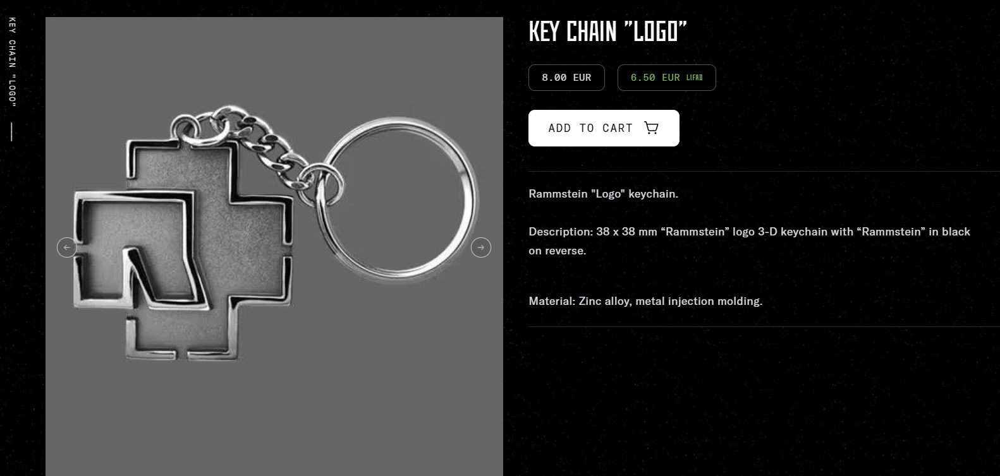En ég fór frá þeirri hugmynd og endaði á að gera hálsmen.
Fusion 360 vinna
Byrjaði að gera grunninn eða rammstein logo-ið einfaldlega í sketch
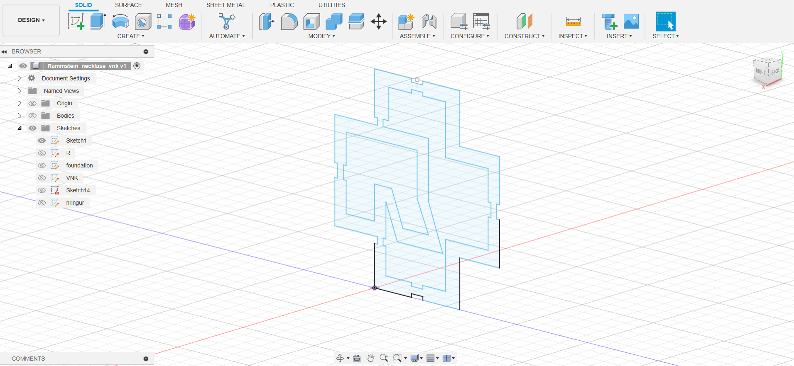Gerði bak eða grunn svo að skrautið verður sterkara. Svo setti ég líka skammstafina mína á bakið.
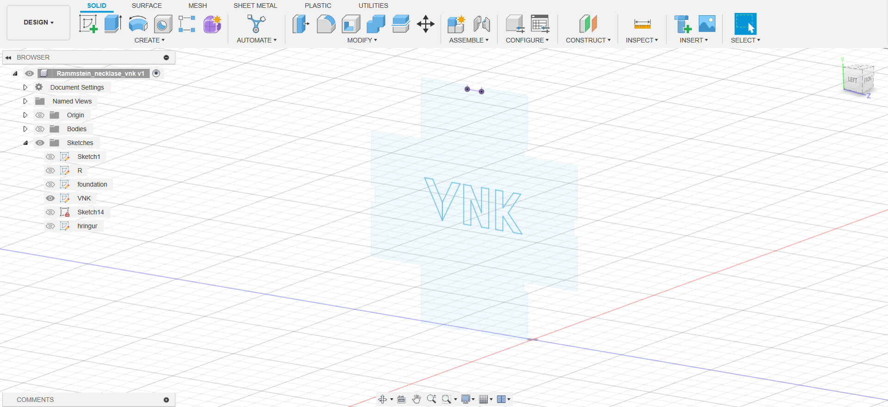Hér sjáið þið þegar ég er búinn að extruda logo-ið um 8mm út.
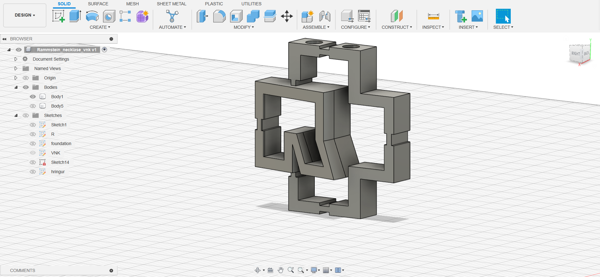Hér er bakhliðin á kyppunni. Ég extrudaði grunninn 2mm og extrude cutt-aði ég inn um 1mm
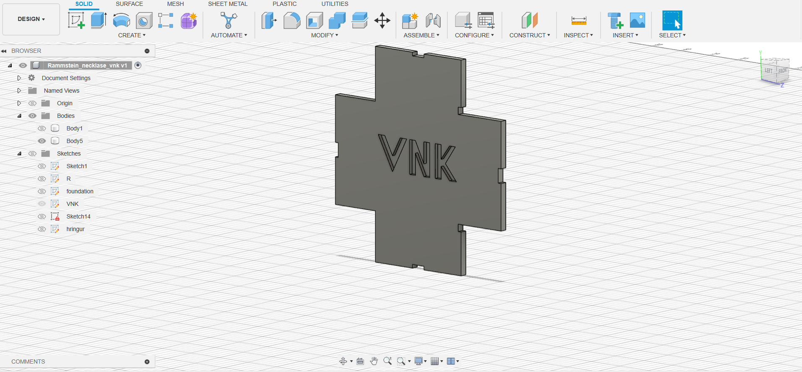Hér eru holurnar þar sem keðja fer í gegnum. Holurnar eru 3mm í þvermál.
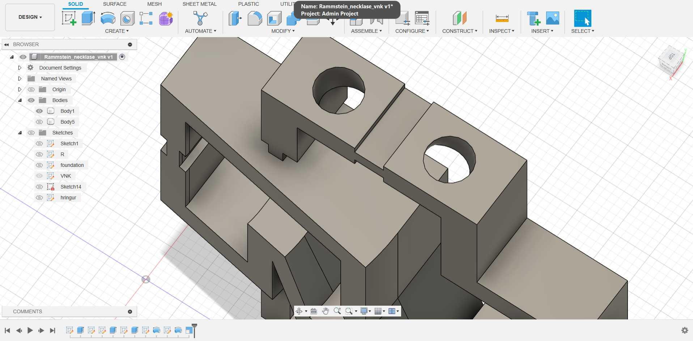Hér ákvað ég að revolve-a R-ið um 10 gráður for taste.
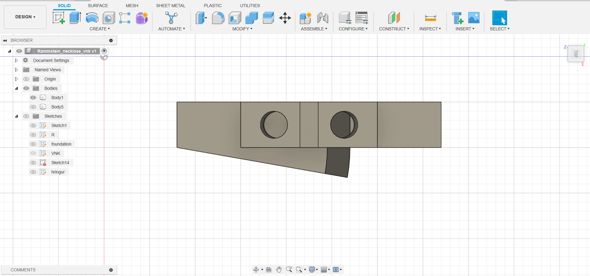Hér er loka product í Fusion 360.
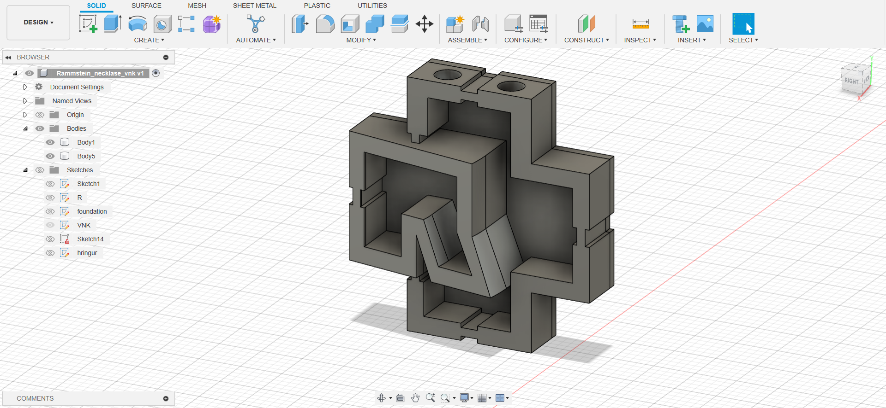PrusaSlicer
Hér sjáum við þegar þetta er komið í 3D printara forritið. Áður en það var prentað þá voru stillingarnar stilltar á viðeigandi gildum t.d að velja rétta 3D prentarann. Og við sjáum hvað hluturinn er þungur og hvað tekur langan tíma að prenta hlutinn.
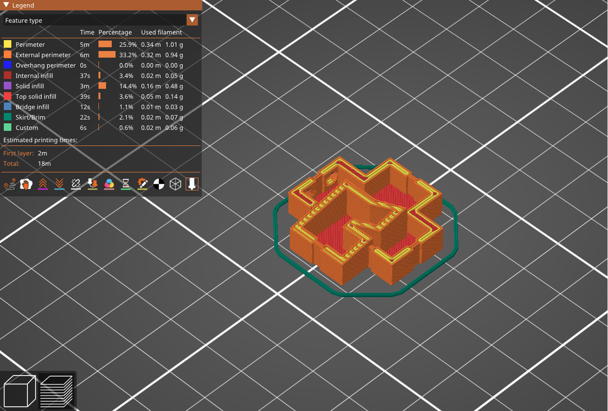 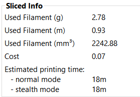Prentun
Í prentun.
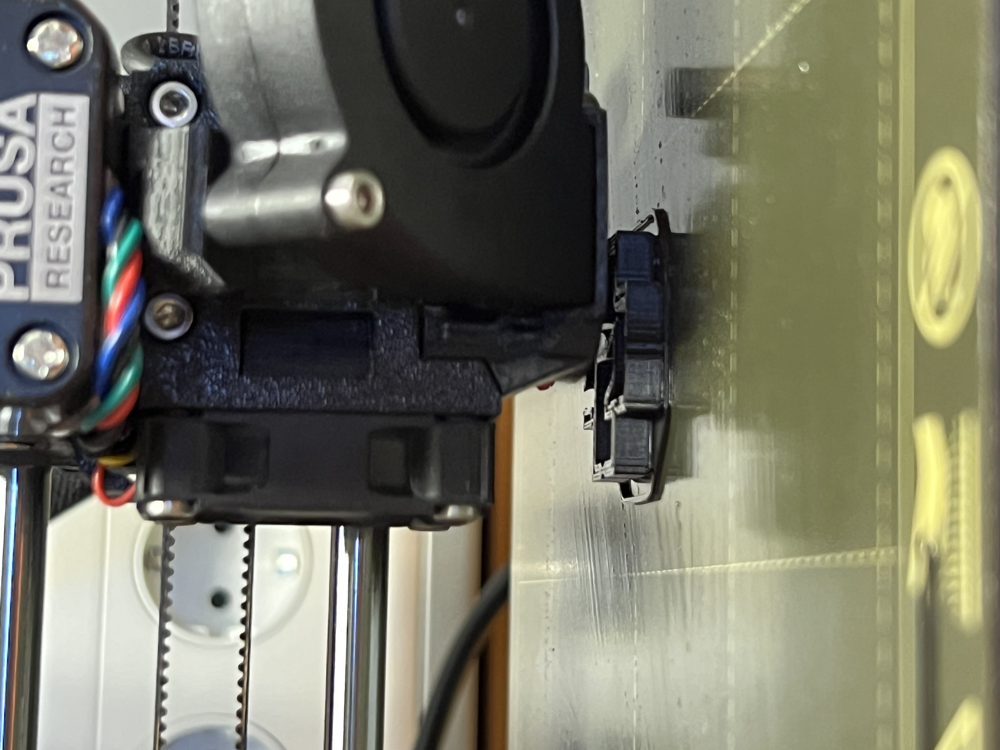Final product.
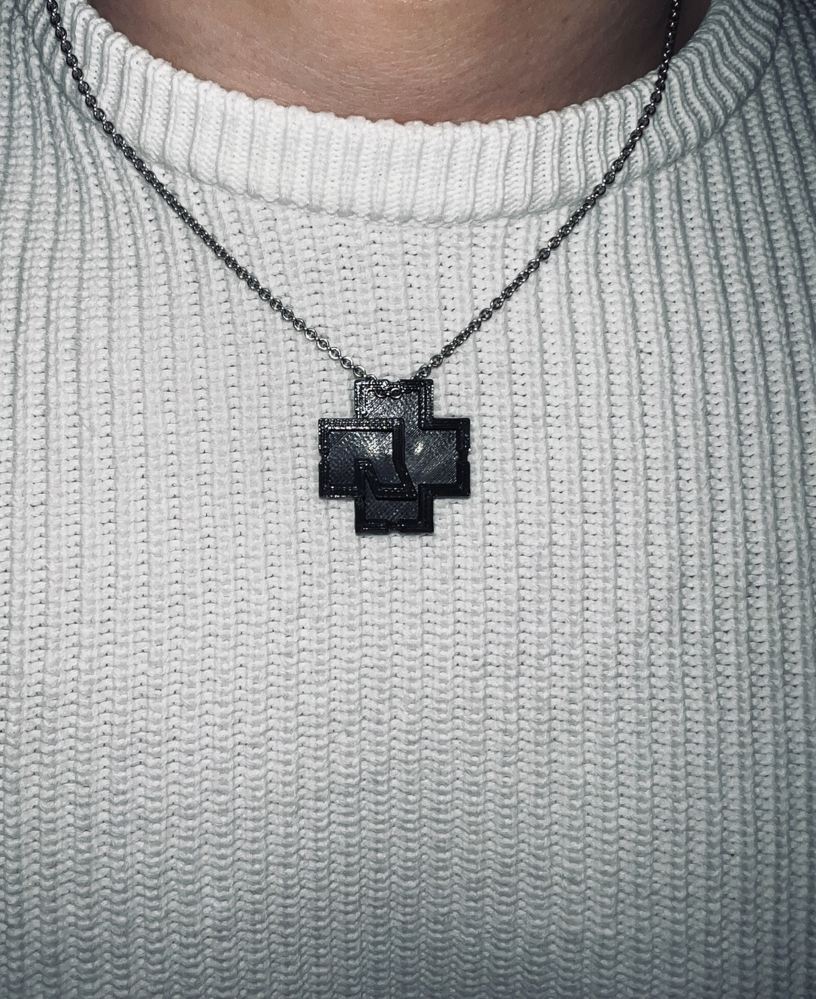Um hálsmennið
58mm í lengd og hæð, 10mm í breidd. Getur tekið við bönd eða keðjur sem eru 3mm eða minni.
3D-skönnun
Hér er hlutur sem ég ákvað að 3D skanna.
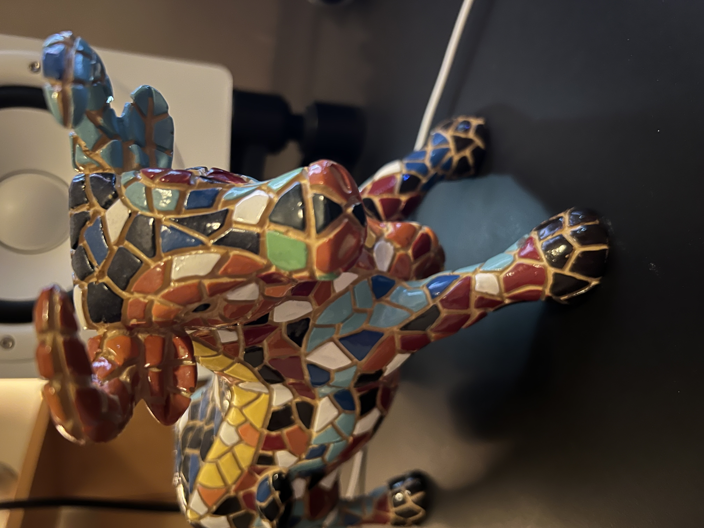Og hér er útkoman.
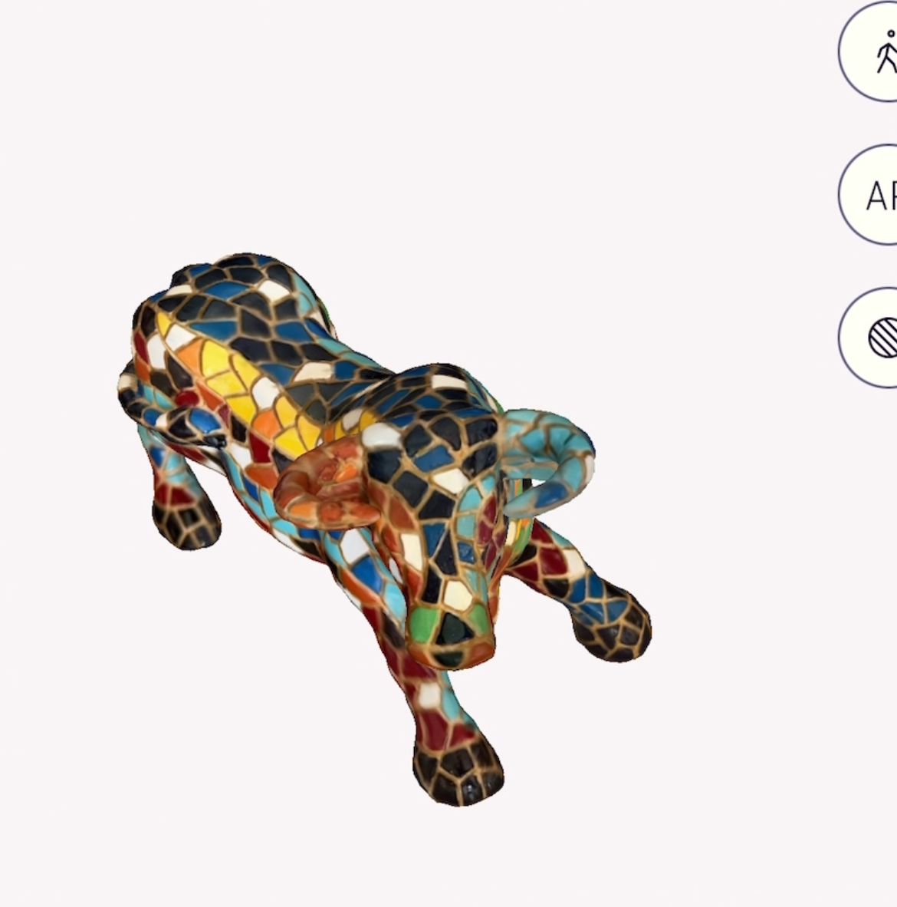 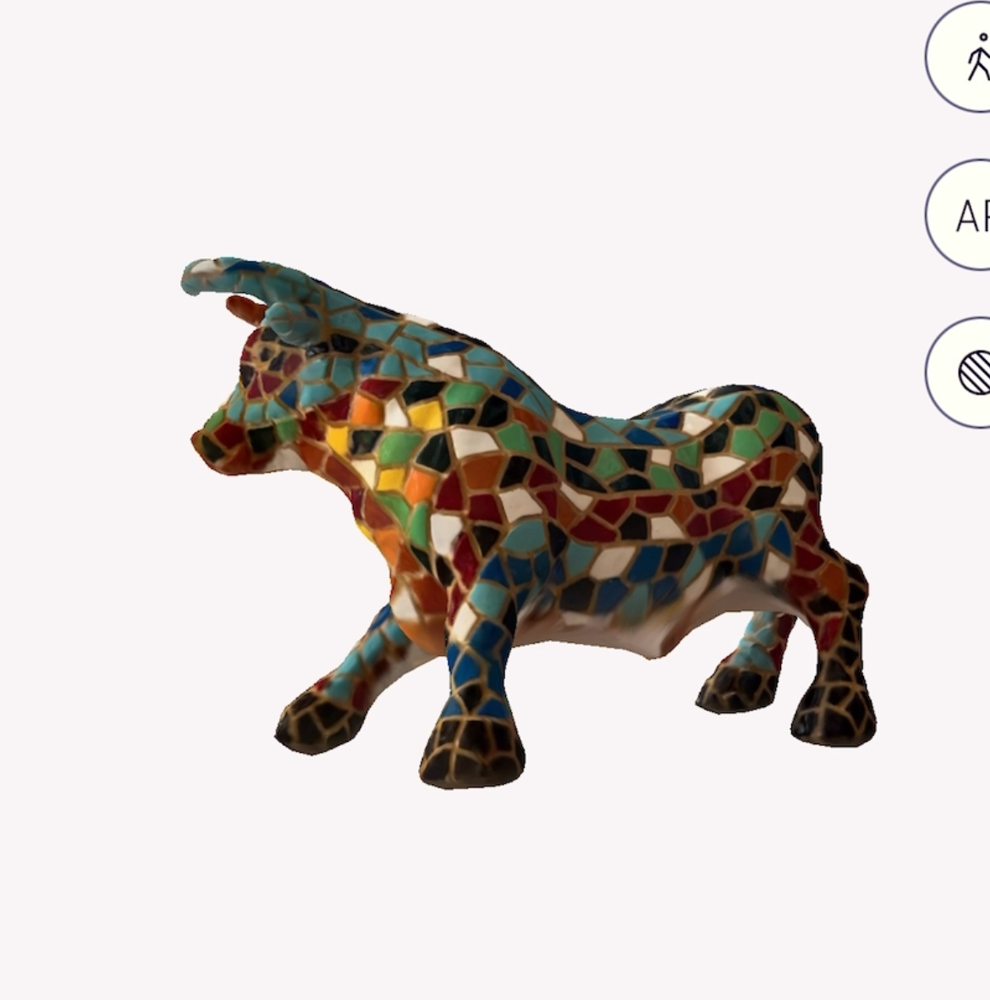 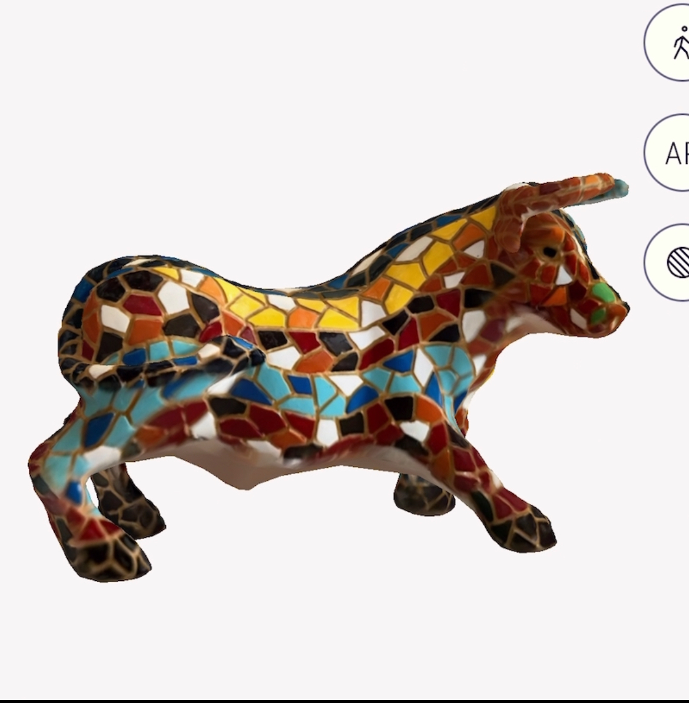 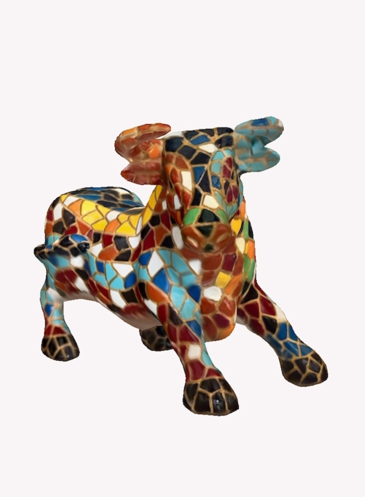